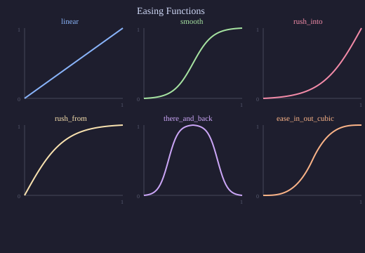

Attributes: Time-Varying Values¶
VectorMation’s core idea is that every visual property is a function of time. The attribute system provides a composable way to define and modify these functions.
Attribute Types¶
Type |
Holds |
Example |
|---|---|---|
|
A single number |
radius, opacity, x-coordinate |
|
A 2D coordinate |
centre of a circle |
|
An RGB/RGBA colour |
fill colour |
|
A string |
SVG path data, text content |
|
An arbitrary-length tuple |
rotation |
Note
Every shape exposes its properties as attributes. For example a Circle
has circle.r (radius) and circle.c (centre), a Rectangle has
rect.width and rect.height, and a Text has text.font_size.
You can animate any of these by calling methods like move_to on them.
Reading Values¶
Every attribute has .at_time(t) to get its value at time t:
circle = Circle(r=100, cx=500, cy=500)
print(circle.r.at_time(0)) # 100
print(circle.c.at_time(0)) # (500, 500)
Setting Values¶
set(start, end, func_inner)¶
Replace the attribute’s value with func_inner(t) on the interval [start, end]:
# Move the circle's radius from 100 to 200 over 2 seconds
circle.r.set(0, 2, lambda t: 100 + 50 * t)
set_onward(start, value)¶
Set the attribute to a constant (or function) from start onwards:
circle.r.set_onward(3, 50) # radius becomes 50 at t=3 and stays
circle.r.set_onward(3, lambda t: 50 + 10 * t) # or a function
add_onward(start, func_or_value)¶
Add to the existing value from start onwards. Accepts a constant or a function:
circle.r.add_onward(2, 20) # radius increases by 20 from t=2
# With a function: oscillate the radius around its current value
import math
circle.r.add_onward(0, lambda t: 10 * math.sin(t * 4))
move_to(start, end, end_val, easing=smooth)¶
Smoothly animate from the current value to end_val:
circle.r.move_to(0, 2, 200) # smoothly grow radius to 200
Example: animating radius with move_to
Smoothly grow and shrink a circle’s radius using move_to.
"""Animate a circle's radius with move_to."""
from vectormation.objects import *
v = VectorMathAnim()
v.set_background()
circle = Circle(r=40, cx=960, cy=540, fill='#58C4DD', fill_opacity=0.8, stroke_width=3)
circle.fadein(start=0, end=0.5)
# Smoothly grow the radius from 40 to 200
circle.r.move_to(0.5, 2.5, 200)
# Then shrink it back
circle.r.move_to(2.5, 4.5, 40)
v.add(circle)
v.show(end=5)
Composing Attribute Calls¶
Attribute methods compose naturally over time. You can chain move_to,
set_onward, and other calls to build complex animations from simple
primitives:
Example: chaining attribute calls
A dot slides to the centre, jumps up instantly with set_onward, then
slides to the right with another move_to.
"""Chaining multiple attribute calls over time."""
from vectormation.objects import *
v = VectorMathAnim()
v.set_background()
dot = Dot(cx=360, cy=540, r=20, fill='#E74C3C')
dot.fadein(start=0, end=0.5)
# Chain: move right, then set a constant position, then move again
dot.c.move_to(0.5, 2, (960, 540)) # slide to centre
dot.c.set_onward(2, (960, 300)) # jump up instantly
dot.c.move_to(2.5, 4, (1560, 540)) # slide to right
v.add(dot)
v.show(end=4.5)
Coordinate-Specific Methods¶
Coor attributes have additional methods:
rotate_around(start, end, pivot_point, degrees)¶
dot.c.rotate_around(0, 5, pivot_point=(500, 500), degrees=360)
The coordinate rotates around the pivot point. pivot_point can be a tuple or a callable returning (x, y).
move_to(start, end, end_pos, easing=smooth)¶
dot.c.move_to(0, 2, (800, 200)) # smoothly move to (800, 200)
Easing Functions¶
Easing functions control the rate of change over a normalised [0, 1] interval.
{kind=link}

Available easings (from vectormation.easings):
Function |
Description |
|---|---|
|
Constant speed |
|
Sigmoid-based smooth start/stop |
|
Fast start, smooth end |
|
Smooth start, fast end |
|
Goes to 1 at midpoint, back to 0 |
|
Quadratic easings |
|
Cubic easings |
|
Spring-like bounce |
|
Bouncing effect |
And many more – see vectormation/easings.py for the full list.
Example: comparing easings
Three circles shift across the screen using linear, smooth, and
ease_out_bounce easings.
"""Side-by-side circles shifting with different easings."""
from vectormation.objects import *
from vectormation.easings import linear, smooth, ease_out_bounce
v = VectorMathAnim()
v.set_background()
labels = ['linear', 'smooth', 'bounce']
easings = [linear, smooth, ease_out_bounce]
colors = ['#E74C3C', '#3498DB', '#2ECC71']
for i, (label, easing, color) in enumerate(zip(labels, easings, colors)):
y = 270 + i * 270
# Label
txt = Text(label, x=100, y=y, font_size=36, fill=color)
txt.fadein(start=0, end=0.3)
# Circle that shifts right using this easing
c = Circle(r=30, cx=400, cy=y, fill=color, fill_opacity=0.8)
c.fadein(start=0, end=0.3)
c.shift(dx=800, start=0.5, end=3, easing=easing)
v.add(txt, c)
v.show(end=3.5)
Color Attributes¶
Colors can be specified as hex strings, colour names, or RGB tuples:
circle = Circle(fill='#58C4DD') # hex
circle = Circle(fill='RED') # colour name
circle = Circle(fill=(88, 196, 221)) # RGB tuple
Color attributes support set(), set_onward(), and interpolate() just like Real attributes.
HSL Interpolation¶
By default, colours interpolate in RGB space. For smoother hue transitions (e.g. rainbow effects), use HSL:
circle.set_color(start=0, end=2, fill='#FF0000', stroke='#0000FF', color_space='hsl')
The color_space parameter is available on set_color() and Color.interpolate().
Example: RGB vs HSL interpolation
Top circle interpolates from red to blue in RGB (goes through purple). Bottom circle interpolates in HSL (sweeps through the hue spectrum).
"""Color interpolation: RGB vs HSL."""
from vectormation.objects import *
v = VectorMathAnim()
v.set_background()
# Top: RGB interpolation (goes through muddy middle)
rgb_label = Text('RGB', x=150, y=340, font_size=36, fill='WHITE')
rgb_circle = Circle(r=80, cx=960, cy=340, fill='#FF0000', fill_opacity=1, stroke_width=0)
rgb_circle.set_color(start=0.5, end=3.5, fill='#0000FF', color_space='rgb')
# Bottom: HSL interpolation (smooth hue transition through rainbow)
hsl_label = Text('HSL', x=150, y=740, font_size=36, fill='WHITE')
hsl_circle = Circle(r=80, cx=960, cy=740, fill='#FF0000', fill_opacity=1, stroke_width=0)
hsl_circle.set_color(start=0.5, end=3.5, fill='#0000FF', color_space='hsl')
v.add(rgb_label, rgb_circle, hsl_label, hsl_circle)
v.show(end=4)